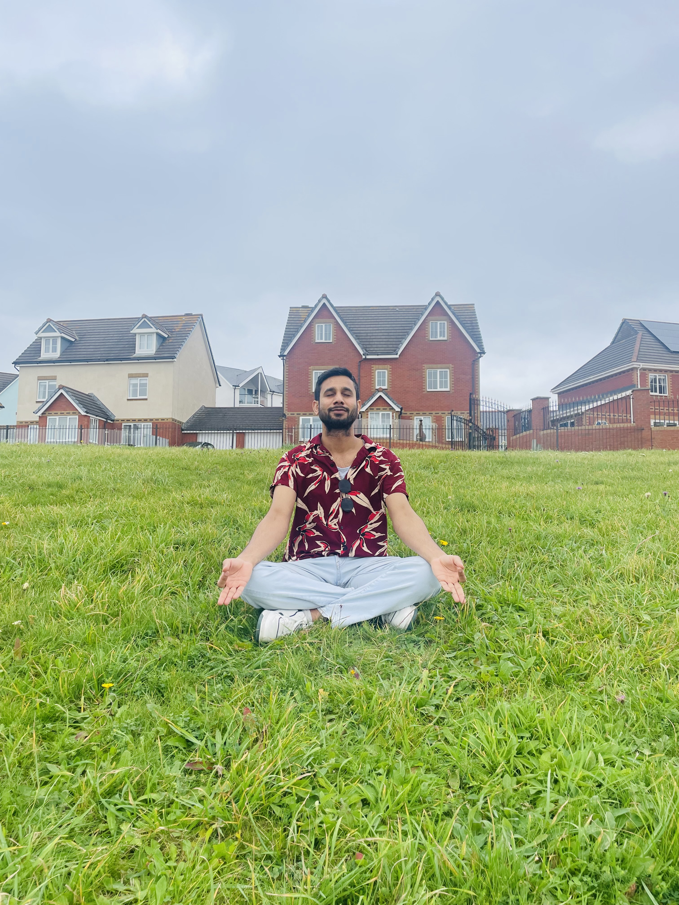
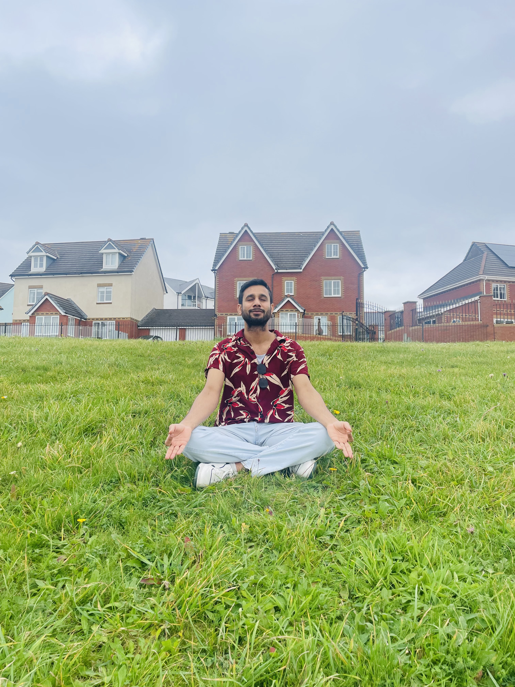

Hello, I'm
Anand Kadam
IT Graduate


"As a recent computer science graduate with a Master's degree, I possess a solid foundation in programming, particularly in Python, and have hands-on experience with front-end technologies like HTML, CSS, and JavaScript. My proficiency extends to database management using MySQL, and I am adept at utilizing tools such as Visual Studio, Tableau, and GitHub."
I believe we should leave this Earth as good as or better than we found it for future generations; my goal is to contribute to those ideals in whatever way I can. If you feel the same, I'd love to talk.
 

Before immersing myself in the ever-evolving world of modern technology, I was an avid internet enthusiast. From a young age, I found myself captivated by the mysteries of computers—how games are developed, the intricacies of the internet—fueling my insatiable curiosity.
My passion for these technological wonders led me to understand how various technologies play harmoniously together. Over the years, I've nurtured and refreshed this skill set, creating a foundation that I continue to build upon. My side project work serves as a playground for my insatiable curiosity about new technologies and a genuine interest in understanding how the web is shaping our future. It's not just work; it's a journey to explore the frontiers of innovation.
"Through coursework and collaborative projects, I've honed my skills in teamwork, problem-solving, and analytical thinking. Despite being early in my career, I am enthusiastic about applying these skills in a professional setting, driven by a passion for technology and a commitment to continuous learning."
Beyond the digital world, you'll find me embracing life. I enjoy the freedom of travel, discovering new places that broaden my perspective. Picture this: sipping coffee in a serene spot, accompanied by a melody of songs playing softly in the background—these are moments I treasure. Volunteering is another facet of my life, providing a sense of fulfillment as I contribute to the community. Most importantly, I cherish the presence of my loved ones, who are an integral part of my journey.
Let's connect and explore the boundless possibilities ahead!